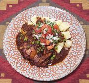

|
Chicken PicanteBolivia - Picante de Pollo | ||||
| Makes: Effort: Sched: DoAhead: |
4 main *** 2-2/3 hrs Prep |
This popular dish is sometimes called the "national dish" of Bolivia. For its standard accompaniments see Serving. It can also be served buffet style, see Buffet. | |||
|
|
1 5 7 9 2 2/3 ----- 2 2 1/2 1/3 ----- 2 1 ----- ar ar ar |
# lrg oz oz cl c --- t t t t --- T c --- |
Chicken Thigh (1) Chilis, Dried (2) Tomato ripe Onion, White Garlic Peas, frozen -- Spicing Cumin Oregano, dry Salt Pepper, blk ------------ Olive Oil Broth (3) -- Serve With Potatoes, boiled Salsa Cruda Steamed Rice |
Prep - (1 hr soaking - 40 min work)
|
amc_chkpic 220618 mbk99 - www.clovegarden.com
©Andrew Grygus - agryg@aaxnet.com - Linking to and
non-commercial use of this page is permitted.